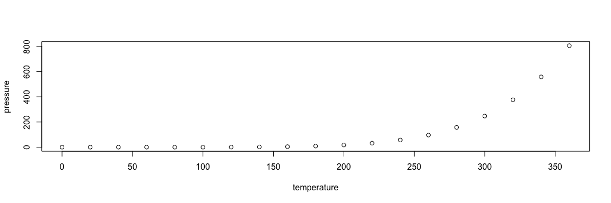

wiki1
Formulas
Energy
(unit of, measured in kWh)
\[E (kWh) = P(W) \times t (hr)1000\] Where:
\(E\): Energy (unit of, measured in kWh)
\(P\): Power (unit, measured in Watts)
\(t\): time period (measured in hours)
Energy Efficiency (\(\mu\)) as %:
\[\mu = \frac{useful \, energy \, output}{total \,energy \, input} \times 100\]
Conservation of Energy Formula
(closed System)
\[\Delta U = Q - W\]
Where:
\(\Delta U\): as a change in internal energy
\(Q\): the net quantity of heat supplied to the system by its surroundings
\(W\): denotes the net work done by the system.
(Open System)
\[\dot{Q} -\dot{W} = \sum \dot{m_{in}} - \dot{h_{out}}\]
Where:
\(\dot{m}\):is the change in mass with respect to time (“flow”)
Heat transferred by:
1. Conduction
\[\dot{Q}= KA \frac{t_{1}-t_{2}}{1}\]
Where
\(K\) is the thermal conductivity constant (obtained by experimentation in W/m.K.)
\(A\) is the area of the surface
2. Convection
\[\dot{Q}= hA ({t_{1}-t_{2}})\]
Where:
\(h\) convective heat transfer coefficient
\(A\) is the area implied in the heat transfer process
\(T\) is for the temperature of the system
3. Radiation
\[\dot{Q}= \varepsilon \sigma A ({T1^{4}-t2^{4}})\]
\(\varepsilon\) is the emissivity of the system
\(\sigma\) is the constant of Stephan-Boltzmann (5.6697 x 10^-8 W/m2.K4)
\(A\) is the area involved in the heat transfer by radiation
\(({T1^{4}-t2^{4}})\) is the difference of temperature between two systems
The PMV index is expressed by P.O. Fanger as
\[PMV = (0.303e ^{0.036M} + 0.028) L\]
where:
\(PMV\) = Predicted Mean Vote Index
\(M\) = metabolic rate
\(L\) = thermal load - defined as the difference between the internal heat production and the heat loss to the actual environment - for a person at comfort skin temperature and evaporative heat loss by sweating at the actual activity level.
HDD (Heating Degree Days)
\[HDD (T_{ref}) =\frac{1}{24}\sum_{8760}^{i=1} max (T_{ref}- T_{ext, i} , 0)\]
\(T_{ref}\): reference temperature
\(T_{ext}\),: exterior temperature
\(i\) = inlet temperatures of hot/cold fluid
CDD (Cooling Degree Days)
\[CDD (T_{ref}) =\frac{1}{24}\sum_{8760}^{i=1} max (T_{ref, i}- T_{ext} , 0)\]
Thermal Balance
\[Q= Q_{in} - Q_{out} = Q_{walls} + Q_{windows}+ Q_{roof}+ Q_{ceiling}\]
Ventilation and Air Leakages
\[\dot{Q} = \dot{m}cp\Delta T\]
where:
\(cp\) = surface pressure coefficient
\(\Delta T\) = temperature difference
Overall Heat Transfer Coefficient (U)
\[Q = U\Delta T\]
\[U = \frac{1}{1/h1 + La/Ka + 1/h2}\]
where \(q\) = heat transfer (W, J/s, Btu/hr)
\(A\) = heat transfer area (m2, ft2)
\(k\) = thermal conductivity of material (W/m K or W/m oC, Btu/(hr oF ft2/ft))
\(dT\) = temperature gradient - difference - in the material (K or oC, oF)
\(s\) = material thickness (m, ft)
Heat Balance
\[Q = Q_{heating/cooling} + Q_{envelope} + Q_{internal}+ Q_{air}\]
Heat through envelope
\[Q_{envelope} = HDD\times Q_{x}\]
\[Q_{x} = A_{ceiling} \times U_{ceiling} \times A_{floor} \times U_{floor} A_{window} \times U_{window} + ( A_{wall} - A_{window }) \times U_{wall}\]
Heat through air exchange
\[Q = \dot{m} _{leakage} \times Cp \times V \times HDD\] Where
\(V\) = Volume of the room
Internal Gains
\[Q_{internal} = Q_{occupants} + Q_{appliances}\]
Solar Gains
\[Q_{solar} = AI (T+U(\sigma^\alpha)\]
Where: \(A\): Area
\(I\): irradiation
\(TU(\sigma^\alpha)\): Coefficient that depends on the transmissivity and the absorbed radiation by the surface, through each radiation enters the room
Hot water modeling
Changing Product Temperature - Heating up the Product with Steam
The amount of heat required to raise the temperature of a substance can be expressed as:
\[\Delta U = m c_{p} \Delta T\]
Where:
\(\Delta U\) = quantity (difference) of energy or heat (kJ)
\(m\) = mass of substance (kg)
\(c_{p}\) = specific heat of substance (kJ/kg K)
$ T$ = temperature (difference) rise of substance
\(c_{p}\) 4.18 kJ/kg.K
Pipe Losses
(Confirmar Formula e imagem)
\[q_{p}= \pi (T_{2}-T_{1})/ ln (D_{out}/D)\]
Lighting Concepts
Luminous Flux (\(\Phi\)) = lm/m2
Illuminance from a Light Source
\[E = \frac{lcos\Phi }{d^2}\]
Where:
\(E\) = illuminance from a certain place (lux)
\(d\)= distance to the light source
\(\Phi\) Angle from the light source
\(I\) = light source luminous intensity (lm)
Lightening Service (L)
Amount of time that the activity takes place
\[L = E\times A\times \Delta T(lm. s)\]
confirmar (lm. s)
Where:
\(E\): Required level of illuminance in a certain place (lux)
\(A\) : Area which requires a certain level of illuminance (m2)
\(\Delta\) : time period
Electrical Potential
\[P = U\times I\]
Where:
\(P\) = Power (Watts)
\(U\) = voltage (volts)
\(I\) = current (Amperes)
Links
We also can insert link like for example: The Digital News Initiative
Including Code (R)
we can also included code shunks:
summary(cars)## speed dist
## Min. : 4.0 Min. : 2.00
## 1st Qu.:12.0 1st Qu.: 26.00
## Median :15.0 Median : 36.00
## Mean :15.4 Mean : 42.98
## 3rd Qu.:19.0 3rd Qu.: 56.00
## Max. :25.0 Max. :120.00Including Plots
Embed plots, for example:

And Images

So this how this image was done:
Python
import numpy as np
import matplotlib.pyplot as plt
from mpl_toolkits.mplot3d import Axes3D
def lorenz(x, y, z, s=10, r=28, b=2.667):
x_dot = s*(y - x)
y_dot = r*x - y - x*z
z_dot = x*y - b*z
return x_dot, y_dot, z_dot
dt = 0.01
stepCnt = 10000
# Need one more for the initial values
xs = np.empty((stepCnt + 1,))
ys = np.empty((stepCnt + 1,))
zs = np.empty((stepCnt + 1,))
# Setting initial values
xs[0], ys[0], zs[0] = (0., 1., 1.05)
# Stepping through "time".
for i in range(stepCnt):
# Derivatives of the X, Y, Z state
x_dot, y_dot, z_dot = lorenz(xs[i], ys[i], zs[i])
xs[i + 1] = xs[i] + (x_dot * dt)
ys[i + 1] = ys[i] + (y_dot * dt)
zs[i + 1] = zs[i] + (z_dot * dt)
fig = plt.figure()
ax = fig.gca(projection='3d')
ax.plot(xs, ys, zs, lw=0.5)
ax.set_xlabel("X Axis")
ax.set_ylabel("Y Axis")
ax.set_zlabel("Z Axis")
ax.set_title("Lorenz Attractor")
plt.show()